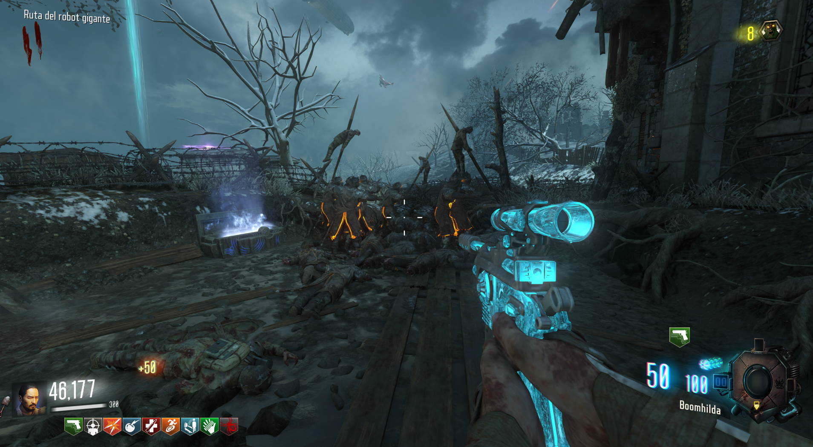
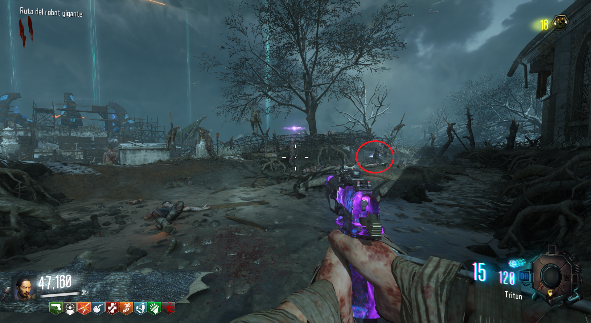
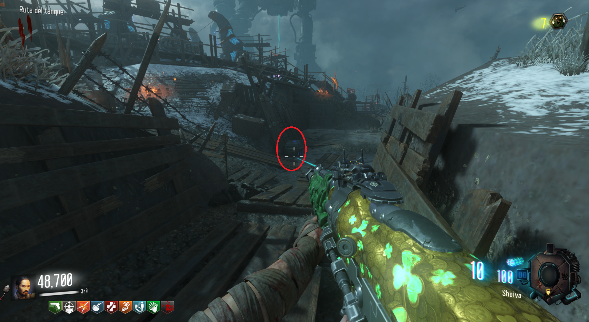
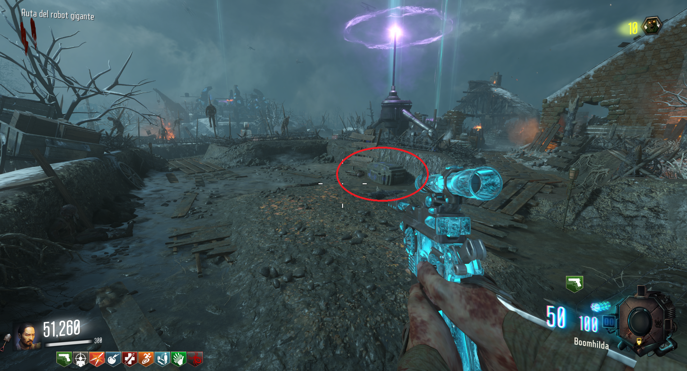
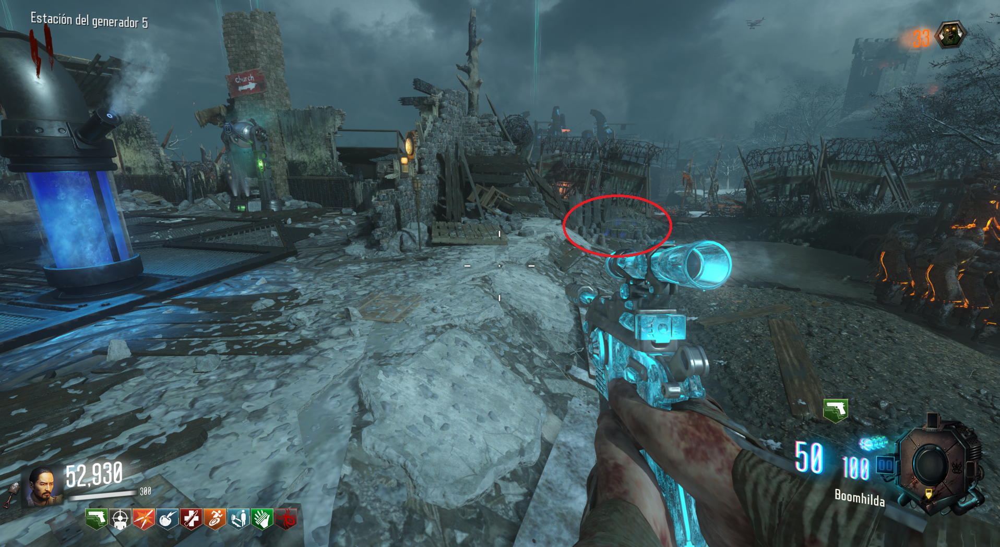
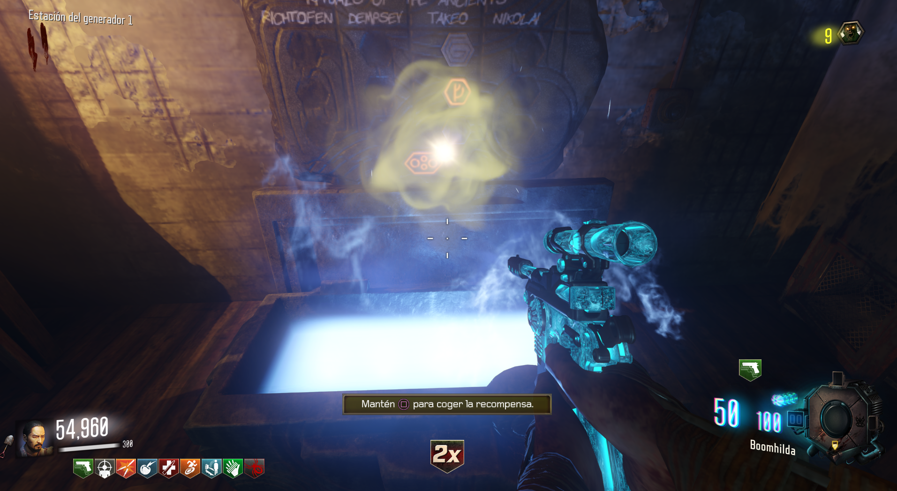

Para conseguir los puños deberemos de matar alrededor de 30 zombies en cada una de las 4 cajas del mapa.
 Localizaciones de las cajas:

En la huella del gigante, frente a la iglesia.

En la huella del gigante, bajo la excavación.

En la huella del gigante del generador 5.

En la huella del gigante del generador 4.
Si el gigante pisa la caja incompleta, las almas se resetean y debemos volver a empezar esa caja, por lo que debemos ser rápidos.
Iremos al generador 1 o al 6 y en la caja podremos reclamar los puños de recompensa.
